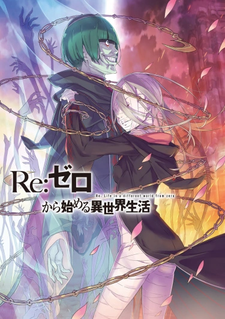

Вечеринка мертвых

Эта история начинается в начальной школе «Небесное воинство», где происходят таинственные исчезновения учеников. Весь город взбудоражен этими событиями, и вскоре удаётся найти виновника — сумасшедшего учителя, перерезавшего своих жертв ножницами...
Дороро
В стране царит смута, и один из генералов жаждет во что бы то ни стало одержать победу в решающей битве, которая ни много ни мало сулит ему трон всей страны. Для этого он решается на страшный грех и заключает сделку с двенадцатью демонами: те помогают ему выиграть бой, а он за это отдаёт каждому из них одну из частей тела своего новорождённого сына...
Для тебя, бессмертный

Оно прибыло на Землю неизвестно откуда — возможно, по чьей-то странной прихоти. Бессмертное нечто, «лист на ветру». Сначала оно приняло форму камня, затем стало мхом и скопировало облик мёртвого животного, после чего наконец обрело сознание. Оно двигалось вперёд по заснеженным равнинам, хотя и не знало, куда направляется... И вот оно встретило человека...
Цикл историй: второй сезон

События второго сезона стартуют сразу после завершения сюжетной арки «Феникс Цукихи». Много чего произошло в жизни Арараги Коёми за последние полгода. Его несколько раз разрывали на части, пили его кровь, бесстыдно коверкали имя и фамилию, обзывали лоликонщиком и извращенцем, угрожали канцелярскими принадлежностями...
Этот замечательный мир!

Так уж получилось, что жизнь Казумы Сато, хикикомори, увлечённого видеоиграми, оборвалась в результате дорожно-транспортного происшествия. Такая вот суровая плата за хороший поступок, за спасение человека...
Как выжить в академии

Однажды я оказался в своей любимой игре, но, к сожалению, мне досталась роль третьесортного, невзрачного персонажа. Все ещё хуже тем, что этот персонаж уже достиг дна общественной лестницы, и окружающие считают его безнадёжным случаем. Позади его - жизнь, полная ошибок и разочарований, и из-за этого от него отвернулись все, кто когда-то мог считаться союзниками или друзьями...
Выбери меня

«Pick Me Up!» — мобильная игра невероятной сложности. Главный герой занимающий 5-е место по покорению башни, теряет сознание при прохождении подземелья и переносится в игру.
Когда главный герой очнулся, он стал игровым персонажем 1-го уровня — Хан Ислатом. И чтобы вернуться на Землю, он должен провести начинающих мастеров и героев через 100-й этаж Подземелья...
Незначительный персонаж собственной истории

Каждая история по-своему уникальна. Автор создаёт мир, продумывает сюжет, прописывает главных и второстепенных героев, каждый из которых выполняет определённую роль, но... Вы замечали, что всегда есть кто-то ещё?.. Они всегда рядом, но никому до них нет дела... Фоновые персонажи, забытые всеми...
Восхождение Львитсы

"Сад Невинности" — это реабилитационный центр для девочек, не имеющих родственников. Но на самом деле это приют для преступниц. Сикибу проникает в эту антиутопию в поисках "спрятанного сокровища", оставленного королём одной из стран. Там её ждёт группа заключённых со своими причудами. Встреча с опаснейшей бывшей дворянкой Шарлоттой Львистой становится отправной точкой для трагедии, которая потрясёт не только приют, но и весь мир...
Ресторанчик какого-то мага

Я был школьником, который мечтал стать шеф-поваром, но меня сбил грузовик, и я стал волшебником 9-го класса в другом мире. Меня сразу же забрали на войну против драконов, и лишь когда она окончилась спустя 15 лет, я наконец-то смог уйти из армии и открыть свой ресторанчик в деревне. Но мою жизнь в деревне трудно назвать обычной, поскольку на втором этаже в моем ресторанчике живет черная драконша, которая притворяется человеческой девушкой и помогает...
Точка зрения всеведующего читателя

Ким Докча — единственный читатель ежедневного романа под названием: «Три способа выжить в разрушенном мире» с более чем 3 000 глав. Этот роман заканчивается последней главой, с благодарностью и последними словами: «Тот факт, что вы читаете это, означает, что вы выживете». На следующий день Ким Докча получает от автора на телефон копию романа, после чего содержание романа становится реальным. И с этого момента начинается игра со смертью, где...
Розовая пора моей школьной жизни сплошной обман

Хатиман Хикигая — старшеклассник, который уже успел разочароваться в жизни. И по его мнению, он сейчас переживает самый худший период в жизни человека — юность. Иллюзию, сотканную из обмана, неудач и лицемерия. Однако, когда он описывает это в школьном сочинении, его учительницу не устраивает такое положение дел, и она отправляет его на "перевоспитание" в клуб волонтёров — место, участники которого помогают другим ученикам в решении их проблем...
Поднятие уровня в одиночку

Десять лет назад, после того как врата, соединявшие реальный мир с параллельным, открылись, некоторые из людей получили силу, позволяющую им охотиться на монстров внутри врат. Их называли охотниками. Однако не все охотники сильные. Меня зовут Сон Джин Ву, я охотник ранга E. Я тот человек, который рискует своей жизнью в подземельях самого низкого уровня. Не имея никаких сверхсильных навыков, я едва зарабатывал необходимые деньги, сражаясь с...
Re:Zero. Жизнь с нуля в альтернативном мире

Спустя год после событий в Святилище лагеря воссоединяются, а дни Субару наполнены событиями. Однако мирные деньки завершаются одним письмом, принесённым гонцом. Приглашение в Пристеллу, город Водных Врат — вот что...
Всемогущий геймдизайнер

Чэнь Мо нравилось называть себя геймдизайнером, несмотря на то, что он был простым продюссером видеоигр. Умерев от стресса, который был связан с его работой, он переселился в параллельный мир в свое тело, которое недавно окончило универ...